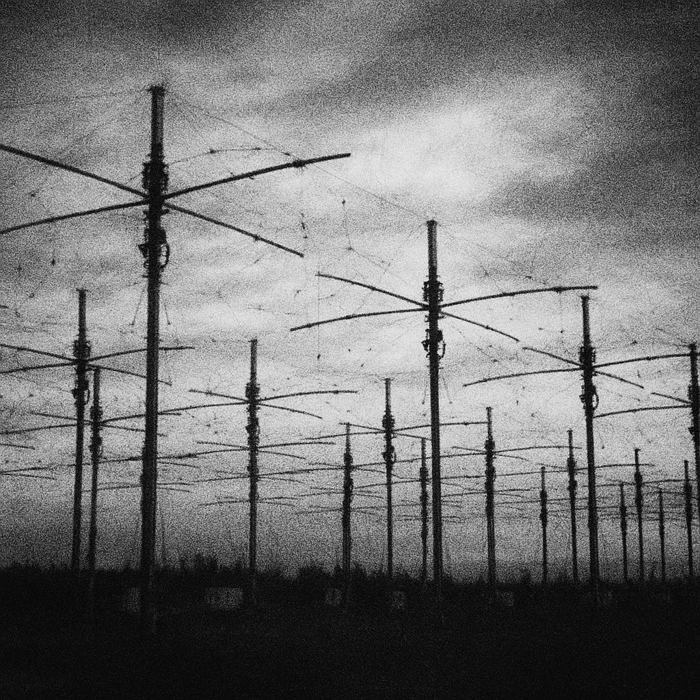

|
HAARP: исследования ионосферы или управление массами?  Если бы вы могли заставить толпу чувствовать одно и то же — злость, страх, ярость — разве не использовали бы это как оружие? Всё началось с импульса На севере Аляски стоит то, что называют HAARP — High Frequency Active Auroral Research Program. В новостях о нём говорят как о «научном комплексе для изучения ионосферы». Но за сухим описанием скрыто кое-что большее. Согласно внутренним документам (фрагменты которых мне удалось получить через старую BBS из Анкориджа), с июля 1998 года комплекс перешёл в «поведенческий режим тестирования». Цель — усиление определённых диапазонов волн, совпадающих с частотами активности человеческого мозга. Гнев, который не объяснить В тот же месяц, когда антенны HAARP включились на полную мощность, по всей территории США фиксировались случаи необъяснимой агрессии:
Люди с усилителями Один из источников, представившийся как бывший консультант ВВС под ником Aurora-9, утверждает, что HAARP используется для усиления сигнала групп «пси-операторов», которых он называл “чувствующими”. Эти люди якобы способны передавать эмоциональные состояния на большие расстояния — и антенны HAARP служат для фокусировки их волн. “Это не радио. Это резонанс. Они заставляют массу людей думать, что злость — их собственная.” Побочные эффекты После нескольких серий испытаний фиксировались кратковременные радиопомехи и странные сны у жителей Аляски. Один фермер из Мак-Грета рассказал, что слышал в голове фразу: “Смотри на север. В тебе уже есть сигнал.”Медики отметили у него идеальное здоровье. Что дальше Если HAARP способен усиливать эмоции — он способен и их создавать. Толпа, ведомая одной мыслью, не нуждается в оружии. А если сигнал можно навести выборочно — то можно вызвать бунт в одном городе и покорность в другом. Комментарий R.F.: Когда слышишь слово «влияние», вспоминаешь рекламу. Но реклама хотя бы выключается. Это — нет. Архив: R.F. — Truth Archives Связь: theyalreadyhere@outlook.com ⟵ назад к статьям |